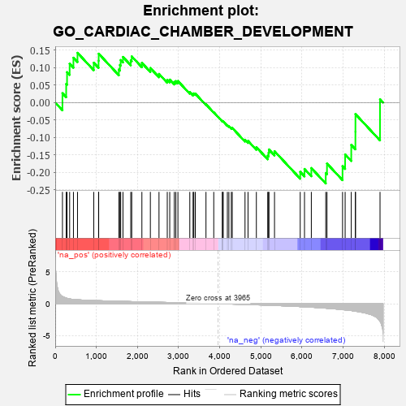
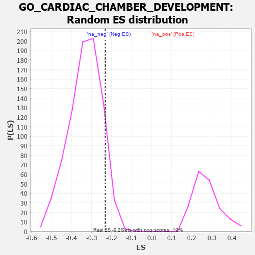

| | | Dataset | 7d |
| Phenotype | NoPhenotypeAvailable |
| Upregulated in class | na_neg |
| GeneSet | GO_CARDIAC_CHAMBER_DEVELOPMENT |
| Enrichment Score (ES) | -0.23185264 |
| Normalized Enrichment Score (NES) | -0.69556606 |
| Nominal p-value | 0.92619926 |
| FDR q-value | 1.0 |
| FWER p-Value | 1.0 |
Table: GSEA Results Summary

Fig 1: Enrichment plot: GO_CARDIAC_CHAMBER_DEVELOPMENT
Profile of the Running ES Score & Positions of GeneSet Members on the Rank Ordered List
| PROBE | GENE SYMBOL | GENE_TITLE | RANK IN GENE LIST | RANK METRIC SCORE | RUNNING ES | CORE ENRICHMENT | | 1 | FOXF1 | | | 176 | 1.136 | 0.0267 | No |
| 2 | TBX20 | | | 267 | 0.880 | 0.0532 | No |
| 3 | SHOX2 | | | 288 | 0.842 | 0.0869 | No |
| 4 | GSK3A | | | 351 | 0.745 | 0.1111 | No |
| 5 | SUFU | | | 443 | 0.665 | 0.1283 | No |
| 6 | SRF | | | 542 | 0.615 | 0.1423 | No |
| 7 | MATR3 | | | 937 | 0.498 | 0.1140 | No |
| 8 | MEF2C | | | 1054 | 0.473 | 0.1197 | No |
| 9 | RBM15 | | | 1057 | 0.473 | 0.1398 | No |
| 10 | SOS1 | | | 1547 | 0.384 | 0.0946 | No |
| 11 | FZD1 | | | 1574 | 0.379 | 0.1076 | No |
| 12 | NPRL3 | | | 1592 | 0.375 | 0.1216 | No |
| 13 | RXRA | | | 1647 | 0.365 | 0.1305 | No |
| 14 | GATA4 | | | 1837 | 0.330 | 0.1209 | No |
| 15 | SMAD4 | | | 1860 | 0.326 | 0.1321 | No |
| 16 | BMP7 | | | 2107 | 0.290 | 0.1135 | No |
| 17 | UBE4B | | | 2313 | 0.258 | 0.0987 | No |
| 18 | SALL4 | | | 2523 | 0.223 | 0.0820 | No |
| 19 | SLIT2 | | | 2724 | 0.195 | 0.0651 | No |
| 20 | NSD2 | | | 2784 | 0.185 | 0.0656 | No |
| 21 | FGFR2 | | | 2895 | 0.167 | 0.0589 | No |
| 22 | ACVR1 | | | 2932 | 0.161 | 0.0613 | No |
| 23 | PCSK5 | | | 2983 | 0.152 | 0.0615 | No |
| 24 | SNX17 | | | 3272 | 0.110 | 0.0299 | No |
| 25 | TAB1 | | | 3351 | 0.097 | 0.0242 | No |
| 26 | SMAD7 | | | 3369 | 0.093 | 0.0261 | No |
| 27 | MED1 | | | 3405 | 0.089 | 0.0255 | No |
| 28 | DCTN5 | | | 3665 | 0.049 | -0.0051 | No |
| 29 | XIRP2 | | | 3854 | 0.020 | -0.0280 | No |
| 30 | SFRP2 | | | 4065 | -0.018 | -0.0537 | No |
| 31 | ROBO2 | | | 4066 | -0.018 | -0.0529 | No |
| 32 | WNT2 | | | 4084 | -0.021 | -0.0542 | No |
| 33 | AP2B1 | | | 4185 | -0.039 | -0.0651 | No |
| 34 | FHL2 | | | 4222 | -0.046 | -0.0677 | No |
| 35 | WNT11 | | | 4282 | -0.056 | -0.0727 | No |
| 36 | TBX2 | | | 4303 | -0.060 | -0.0727 | No |
| 37 | GATA3 | | | 4614 | -0.120 | -0.1066 | No |
| 38 | PTK7 | | | 4687 | -0.136 | -0.1098 | No |
| 39 | SLIT3 | | | 4890 | -0.175 | -0.1278 | No |
| 40 | TBX1 | | | 5166 | -0.241 | -0.1522 | No |
| 41 | PARVA | | | 5187 | -0.245 | -0.1442 | No |
| 42 | SMO | | | 5195 | -0.247 | -0.1344 | No |
| 43 | NPY2R | | | 5331 | -0.281 | -0.1394 | No |
| 44 | PRDM1 | | | 5956 | -0.457 | -0.1985 | No |
| 45 | JAG1 | | | 6060 | -0.494 | -0.1903 | No |
| 46 | TPM1 | | | 6226 | -0.545 | -0.1876 | No |
| 47 | ROBO1 | | | 6577 | -0.699 | -0.2018 | Yes |
| 48 | MKS1 | | | 6607 | -0.715 | -0.1747 | Yes |
| 49 | PDE2A | | | 6985 | -0.927 | -0.1824 | Yes |
| 50 | MYH10 | | | 7048 | -0.966 | -0.1486 | Yes |
| 51 | OVOL2 | | | 7197 | -1.068 | -0.1213 | Yes |
| 52 | ANK2 | | | 7298 | -1.170 | -0.0836 | Yes |
| 53 | MSX2 | | | 7299 | -1.171 | -0.0332 | Yes |
| 54 | CAV3 | | | 7896 | -2.739 | 0.0095 | Yes |
Table: GSEA details [plain text format]

Fig 2: GO_CARDIAC_CHAMBER_DEVELOPMENT: Random ES distribution
Gene set null distribution of ES for GO_CARDIAC_CHAMBER_DEVELOPMENT